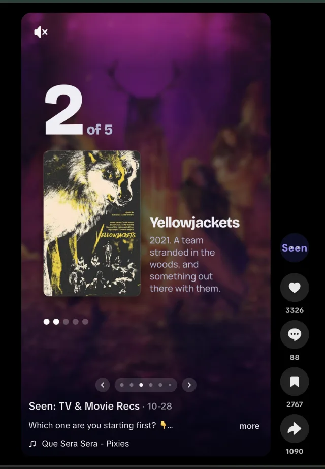

Watch Together, two people swiping until “It’s a match!”
Recommendations get lost.
Picking something to watch means scrolling for ages, and algorithm suggestions and strangers’ reviews don’t know your taste. Recommendations from friends do, but they end up in group chats and notes apps. By the time you sit down to watch, you’ve forgotten what they were or who suggested them.
Existing apps don’t fix this. Letterboxd is built around public reviews and following strangers, and covers films only. TV trackers like TV Time and Serializd track shows, but don’t put friends’ recommendations at the centre. And most people don’t use any app at all.
5 interviews, 54 survey responses.
Between January and March 2025 I interviewed 5 people, mostly people who don’t track what they watch, plus one Letterboxd user. I asked 7 questions, from how they keep track today to what makes them actually watch something a friend recommends. The survey got 54 responses.
What I found:
-
Most people don’t track what they watch, and most don’t know tracking apps exist.
87% use memory, notes or nothing. Only 9% use an app. Four of the five people I interviewed had never used one.
“I didn’t think that there was a tracking app.”
-
Friends are the main way people find what to watch, but who’s recommending matters.
Friend recommendations were the top source, at 74%.
“If there’s any input from someone I trust it makes an impact.”
-
Friends’ recommendations get lost.
“I add them to apple notes, but rarely come back and check them.”
“Sometimes I have a long list and forget who told me about it. It’s just a random list of titles that don’t mean much.”
-
Picking something means endless scrolling.
“Chronic scroller. Jump from every TV app for 2 hours unless I have something recommended.”
-
People would join if their friends were there. That’s also the biggest risk.
61% would join if a friend invited them.
“If a few of my friends used it first and I trusted their taste.”
“Don’t know many people who use anything else, so it doesn’t feel like I need to do it.”
One result surprised me. Seeing what friends are watching (30%) and episode discussion (24%) rated lowest of the 7 features I asked about, while personalised recommendations rated highest (67%).
Getting friends on the app is the job.
An app built on friends’ recommendations is empty until your friends join. The research said this was the biggest risk, so most of the design deals with it.
- You can send a recommendation by link to someone who isn’t on Seen. When they join, the recommendation is waiting and you become friends automatically.
- Invite links survive installing the app.
- Sign-up includes a “send your first rec” step.
- You can import your history from Letterboxd, IMDb, TV Time or a pasted list, so your library isn’t empty on day one.
- Home, when it’s empty, offers “Recommend something”, “Invite a friend” and “Popular right now”.
- Some features work without friends: Up next, new-episode alerts, where to watch, and “More like this”.
What I didn’t do: fill the app with public feeds from strangers. Two limited exceptions came later, both placed below friends: public episode comments, and labelled reviews from TMDB.

Other decisions from the research.
A recommendation is its own thing. It has a note, the sender’s name, reactions and comments, and it stays in the app, so you always know who recommended what and why. Not an algorithm deciding what you see.
Tracking has to be worth doing. People aren’t used to it, so there has to be a reason to log what they’ve watched. Ticking off an episode takes one tap, history can be imported, and marking something watched opens a rating sheet with “Send to a friend”. Profile stats and a Top 5 reward logging. I didn’t add badges or points: one interviewee asked for them, but volume badges reward logging alone, not recommending.
Friends, not the public. Interviewees didn’t want strangers to see their reviews (“having anyone seeing that would be weird”). Everything is friends-only by default, and each title has a “Visible to friends” switch.
No spoilers. 52% rated avoiding spoilers 4 or 5 out of 5. Episode comments stay hidden until you’ve ticked off that episode, and spoiler reviews are covered until tapped.
Keep it simple. One interviewee said Letterboxd “looked too complicated”, and another said “simpler the better”. Seen has a few main tabs, friends first on every screen, and none of Letterboxd’s public-review layers.
The main screens.


Screens show sample data.
Tonight (swipe through ideas alone or with a friend until you both say yes) is shown in the video at the top.
Changed by what people did.
I test every change on a development build on two phones, an iPhone and a Samsung Galaxy A16, before it ships. These changes came from feedback, data or testing:
- 0 of 28 recommendation links sent to people without the app led to a sign-up. I fixed the links on 14 October 2026.
- Invite links were lost during install, so the friendship never formed. Fixed.
- The Home empty state never prompted anyone to send a recommendation. Rebuilt.
- A friend suggested the watchlist overlap prompt on WhatsApp, and it was live three days later: add a title to your watchlist and Seen tells you which friends have seen it, then opens a chat with them.
- The Google sign-in button was dark on navy, with a contrast of 1.03:1. Changed to white.
- An onboarding step asking new users to pick 3 people was cut as too pushy.
- A “Dropped” status, list pasting, and “More like this” were all added after users asked for them.
Results so far.
On 7 August 2026:
- 109 users, 106 finished onboarding.
- 66 users (61%) had at least one friend, up from 50% three weeks earlier.
- 327 recommendations sent, 59 marked as watched.
By early October 2026, 198 users had finished onboarding.
The best TikTok post, made with Sunset, has 69,000 views and 3,326 likes.

The research was right about the biggest risk. Users with friends behaved completely differently from users without, and most users never got past an empty library: in August, 83% had 5 or fewer titles. Importing history and fixing recommendation links mattered more than new features.
What I learned.
- Getting people to send recommendations is easier than getting the person who receives one to watch it.
- What people rate highly in a survey isn’t always what brings users. Episode discussion rated lowest, but people leaving TV Time wanted it, so I added it after launch.
- Views aren’t sign-ups. Posts about taste got views on TikTok but few installs. Replying on X and Reddit to people asking for exactly what Seen does worked better.
- Decide with real numbers, and say when the sample is too small.
What’s next.
Custom lists, measuring new users since the late October updates, and an “Up next” home-screen widget.